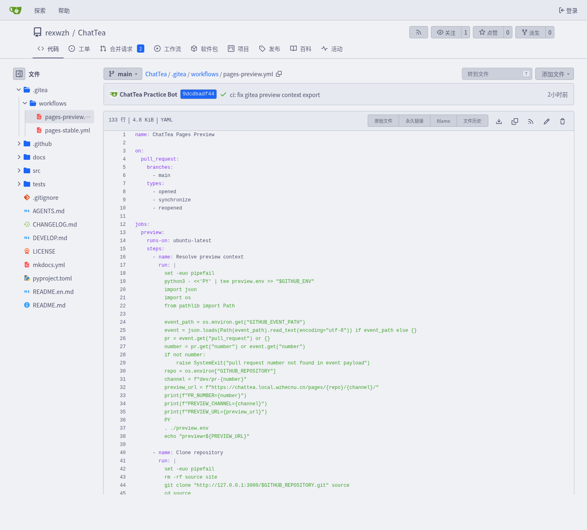
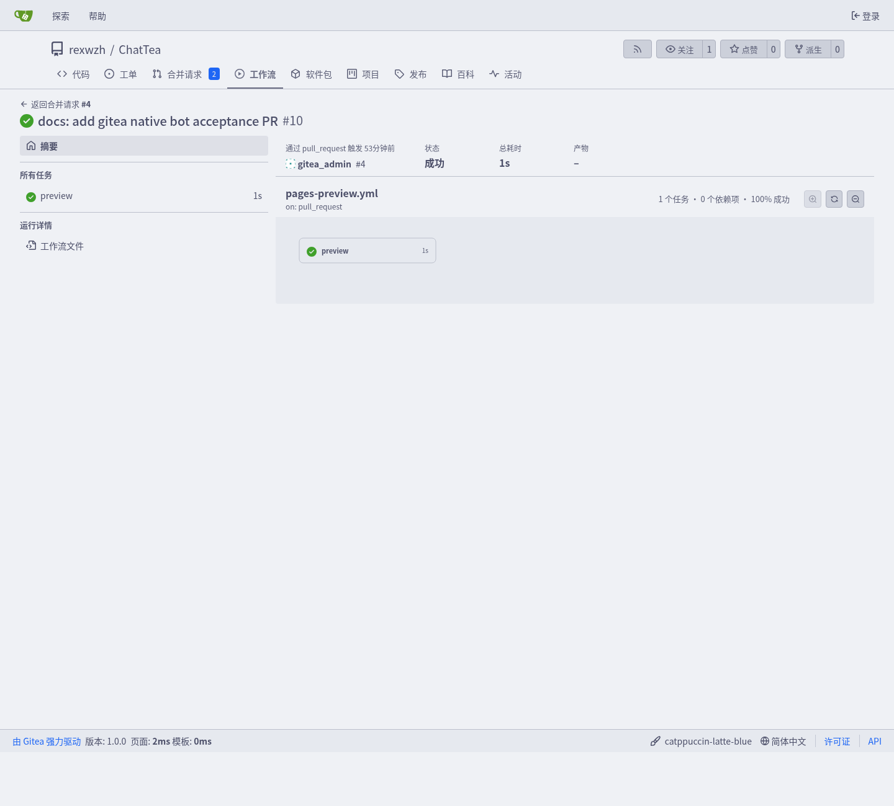
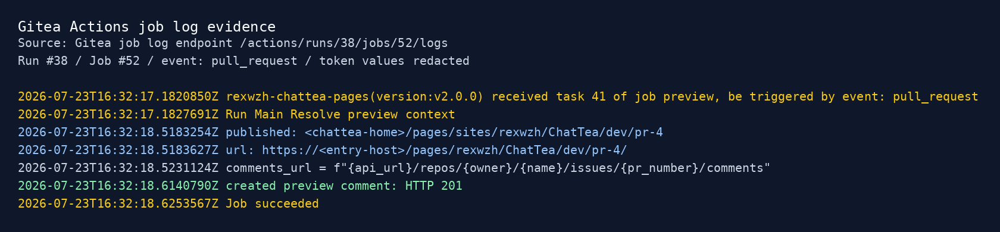
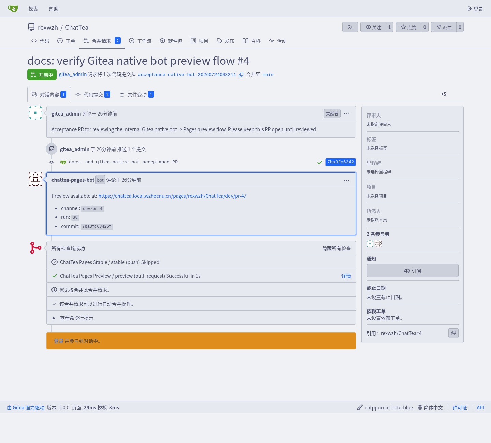
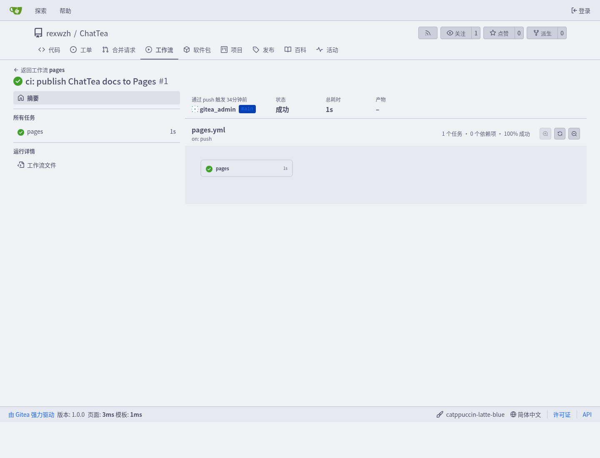

Gitea Pages 机制与静态站点发布
这篇文档定义 ChatTea Pages v0.1 的默认实现认识：Gitea 主站继续作为 Git 代码服务，Pages 作为独立静态站点服务，Actions 负责把仓库内容构建并发布到 Pages。文档使用占位符，不写真实域名、机器路径、账号、令牌或证书路径。
当前需求
我们要把 Pages 当成和 Git 并列的第二个 Web 服务，而不是把用户站点塞进 Gitea 主站进程或主站同源路径里。
核心需求：
- ChatTea 托管两个对外 Web 服务：Git service 和 Pages service。
- Gitea Actions / Runner 由 ChatTea 管理，但它是执行面 worker，不是第三个对外网站。
- Actions 要能直接发布 Pages：构建完成后调用发布命令，Pages service 已经在 serve，发布完即可访问。
- Pages URL 使用 path 模式：
https://<pages-domain>/<owner>/<repo>/，不默认分配三级域名。 - 域名、TLS、redirect、主站入口、custom domain 和 resolver 属于 Nginx/Caddy 或后续 resolver 层，不绑进 v0.1 核心。
- 第一版不 fork Gitea，不做私有 Pages 鉴权，不做自定义域名，不把 Pages 正文放在 Gitea 主站同源下。
一句话模型
Git service:
Gitea 主站、Git 仓库、API、Actions 调度、runner registry。
Actions worker:
runner daemon 执行 workflow job，构建静态目录，调用 Pages publish。
Pages service:
直接 serve 已发布静态文件。
从对外服务看，第一版只有两个 Web 服务：
https://<gitea-domain>/ # Git service
https://<pages-domain>/<owner>/<repo>/ # Pages service，owner/repo 放在 URI path 中
Nginx/Caddy 可以把这两个服务统一挂到同一台机器、同一套证书或同一个公网入口下，但那是入口整合问题，不改变 ChatTea 的服务边界。
服务和文件边界
ChatTea 的 user-level 目标是让服务状态落在普通 Unix 用户可控的文件树里。详细文件系统说明见 ChatTea 运行时文件系统与服务边界。这里给出 Pages 相关的最小关系：
<chattea-home>/gitea/ # Git service 状态
<chattea-home>/runners/<runner-name>/ # Actions worker 状态
<chattea-home>/pages/ # Pages service 状态
<chattea-home>/pages/sites/<owner>/<repo>/ # 已发布站点
对应 user-level unit 形态：
chattea-gitea.service # Git service
chattea-runner@<runner-name>.service # Actions worker，不是 Web service
chattea-pages.service # Pages service
URL 约定
Pages v0.1 使用 path-based URL，不默认分配三级域名：
Gitea 仓库： https://<gitea-domain>/<owner>/<repo>
Pages 正文： https://<pages-domain>/<owner>/<repo>/
仓库链接： repo.website = https://<pages-domain>/<owner>/<repo>/
可选主站入口可以后续由 Nginx/Caddy 或 Gitea UI 提供：
https://<gitea-domain>/pages/<owner>/<repo>/ -> 302 到 https://<pages-domain>/<owner>/<repo>/
这个入口只做跳转或状态展示，不直接返回用户提交的 HTML。原因是浏览器同源只看 scheme、host 和 port，不看 path；如果把任意用户 Pages 正文放到 Gitea 主站同源路径下，用户 JS 会处在 Gitea 主站 origin 里，安全边界会变复杂。
Actions 到 Pages 的发布流
推荐主路径是 Git-backed branch deploy，完整说明见 Git-backed Pages 分支部署：
1. 用户 push main 或更新 PR
2. Gitea 读取 .gitea/workflows/*.yml，创建 workflow run / job
3. runner daemon 按 scope + runs-on label 领取 job
4. workflow 在 runner node 上 checkout 代码并构建 site/ 或 public/
5. workflow 把静态产物 commit/push 到配置好的 Pages 分支，例如 gh-pages
6. Pages Host syncer 从 Gitea fetch/checkout 该 Pages 分支
7. syncer 把静态目录写入 staging，并原子替换 pages/sites/<owner>/<repo>/<channel>
8. Pages service 正在 serve，URL 立即可访问
这个模型不要求 runner 和 Pages Host 在同一台机器上，也不要求 runner 挂载或写入 Host 的 <chattea-home>/pages/sites。runner 只需要访问 Gitea，并拥有写 Pages 分支的权限；Pages Host 只需要读取配置好的 Pages 分支。
Host-local publish 仍可作为内网 smoke test 或兼容模式：workflow 直接调用 chattea pages publish --source site 写入本机 Pages root。但这不应作为 heavy docs、Lean/mathlib docs 或生产部署的默认模型。
Host-local publish 验证流程
这一节保留的是早期内网 smoke test 方式：runner 直接调用本机 publisher，把已构建目录写到 Pages Host 的 pages/sites。它适合验证 Gitea Actions、bot comment、channel metadata 等链路，但不是 heavy docs 的推荐生产路径。推荐生产路径请看 Git-backed Pages 分支部署。
1. 在仓库里添加 workflow YAML
仓库只要在默认分支提交 .gitea/workflows/pages.yml，Gitea push 后就会把它识别为 Actions workflow。下面是 Host-local 验证链路使用的结构：
name: ChatTea Pages
on:
push:
branches:
- main
jobs:
pages:
runs-on: ubuntu-latest
steps:
- name: Show action context
run: |
echo "repo=$GITHUB_REPOSITORY"
echo "sha=$GITHUB_SHA"
echo "run=$GITHUB_RUN_ID"
pwd
- name: Clone repository
run: |
rm -rf source site
git clone "<gitea-loopback-url>/$GITHUB_REPOSITORY.git" source
cd source
git checkout "$GITHUB_SHA"
- name: Build MkDocs site
run: |
mkdocs build \
--clean \
-f source/mkdocs.yml \
--site-dir "$PWD/site"
- name: Publish Pages
run: |
chattea pages publish \
--repo "$GITHUB_REPOSITORY" \
--source "$PWD/site" \
--commit "$GITHUB_SHA" \
--run-id "$GITHUB_RUN_ID"
关键点：
on.push.branches决定什么分支触发 Pages 构建；runs-on: ubuntu-latest必须能匹配一个在线 runner 的 label；GITHUB_REPOSITORY是 Gitea runner 注入的owner/repo；GITHUB_SHA是触发本次 run 的 commit；GITHUB_RUN_ID用于写入 Pages 发布元数据；- Gitea Actions 为兼容 GitHub Actions 生态，沿用
GITHUB_*环境变量名；这里的值仍然来自当前 Gitea 实例，不表示任务跑在 GitHub 上； - 正式 CLI 落地前，验证环境可以把
chattea pages publish替换成受管 Pages publisher 脚本；接口参数保持一致。
如果 runner 环境可以稳定使用 checkout action，也可以把 Clone repository 换成 uses: actions/checkout@v4。内网或离线环境建议显式从本机 Gitea loopback clone，避免依赖外部 marketplace。
2. PR preview 与合并后的正式 Pages
要模拟 GitHub 的 Preview Docs 行为，建议把 workflow 拆成两个 channel：
pull_request -> build -> publish --channel dev/pr-<number> -> bot comment preview URL
push main -> build -> publish --channel stable -> update formal URL
对应 URL：
Preview: https://<entry-host>/pages/<owner>/<repo>/dev/pr-<number>/
Stable: https://<entry-host>/pages/<owner>/<repo>/
Preview workflow 的关键步骤是：
- 从
GITHUB_EVENT_PATH读取 PR number； - 构建站点到
site/； - 调用
chattea pages publish --channel dev/pr-<number>； - 用 Gitea 原生 bot 用户的 token 调用 Gitea issue comment API，把 preview URL 写回 PR；
- 如果已有
<!-- chattea-pages-preview -->标记的评论，就更新同一条评论，而不是重复刷屏。
Gitea 自托管实例可以直接创建原生 bot 用户，不需要先实现一个常驻 bot 服务。推荐做法是由管理员创建一个专用账号，例如 chattea-pages-bot：
gitea admin user create \
--username chattea-pages-bot \
--email chattea-pages-bot@example.invalid \
--user-type bot \
--fullname "ChatTea Pages Bot"
gitea admin user generate-access-token \
--username chattea-pages-bot \
--token-name chattea-pages-preview \
--scopes write:issue,read:repository \
--raw
把生成的 token 写入 Gitea Actions secret，例如 CHATTEA_BOT_TOKEN。workflow 评论步骤使用这个 secret 调 API，最终 PR 评论作者会显示为 Gitea 的 chattea-pages-bot，这对应 GitHub 里的 github-actions[bot] / bot identity 体验。
构建步骤不要暴露这个 token；评论步骤使用内联脚本调用 API，不执行仓库代码。这样可以降低 PR 代码窃取评论 token 的风险。
Stable workflow 在 main 更新时调用 chattea pages publish --channel stable。实现上应保证 stable 发布不会删除 dev/pr-* preview 目录，否则 PR preview 链接会在 main 部署后失效。
3. 内网验收截图
下面的截图来自一个保持 open 的内网验收 PR，用来确认 Gitea 可以完成 GitHub-like preview flow：
PR opened
-> pull_request workflow
-> runner build
-> publish dev/pr-N
-> Gitea native bot comment
Workflow 文件本身说明这不是人工触发，而是 Gitea pull_request 事件触发 preview job：

Actions run 页面显示本次任务由 pull_request 触发，runner 完成 preview job：

Job 日志展示关键产物和 comment 创建结果：先发布 preview channel，再通过 Gitea API 创建 PR 评论：

PR timeline 中的 preview 评论由 Gitea 原生 bot 用户发出，评论里包含 dev/pr-N 链接：

4. Gitea 如何找到并执行这个 Action
当 pages.yml 被 push 到默认分支后：
Git push
-> Gitea 收到 refs/heads/main 更新
-> Gitea 读取 .gitea/workflows/pages.yml
-> 创建 workflow run 和 job
-> 查找 scope 覆盖该仓库、label 匹配 runs-on 的 runner
-> runner 领取 pages job 并执行 steps
可以用 Web UI 看：
<gitea-domain>/<owner>/<repo>/actions
<gitea-domain>/<owner>/<repo>/actions/runs/<run-id>
也可以用 CLI 查：
chattea runner registry list --scope repo --repo <owner>/<repo> --json-output
chattea run list --repo <owner>/<repo> --json-output
chattea run jobs --repo <owner>/<repo> <run-id> --json-output
chattea job logs --repo <owner>/<repo> <job-id>
当前验证中的 Actions run 页面如下：

5. Pages 部署到哪里
chattea pages publish 不负责构建，只负责把已构建好的静态目录发布到 Pages service 的 root 下：
source site/
-> <chattea-home>/pages/staging/<tmp>/
-> atomic replace
-> <chattea-home>/pages/sites/<owner>/<repo>/
发布后的目录形态：
<chattea-home>/pages/sites/<owner>/<repo>/
├── index.html
├── assets/
├── en/
├── .chattea-pages.json
└── dev/
└── pr-<number>/
├── index.html
└── .chattea-pages.json
.chattea-pages.json 记录最后一次发布来源：
{
"repo": "<owner>/<repo>",
"commit": "<commit-sha>",
"run_id": "<actions-run-id>",
"channel": "stable",
"published_at": "<timestamp>",
"source": "gitea-actions"
}
Pages service 长驻运行，只 serve <chattea-home>/pages/sites。因此 publish 完不需要重启服务，站点路径会立即生效。
6. 怎么访问发布后的站点
默认访问路径：
https://<pages-domain>/<owner>/<repo>/
仓库 metadata 的 website 字段也应指向同一个地址：
chattea repo edit <owner>/<repo> \
--website https://<pages-domain>/<owner>/<repo>/
验证命令：
curl -I https://<pages-domain>/<owner>/<repo>/
curl https://<pages-domain>/<owner>/<repo>/ | grep -i '<title>'
Pages 是否可访问用 HTTP 状态、HTML title 或 metadata 校验即可，不需要在教程里放最终站点截图。
Pages service 目录
建议默认目录：
<chattea-home>/pages/
├── config.yaml
├── sites/
│ └── <owner>/
│ └── <repo>/
│ ├── index.html
│ ├── assets/
│ └── .chattea-pages.json
├── staging/
└── log/
发布元数据示例：
{
"repo": "<owner>/<repo>",
"commit": "<commit-sha>",
"run_id": "<actions-run-id>",
"channel": "stable",
"published_at": "<timestamp>",
"source": "gitea-actions"
}
publish 命令只做文件操作：检查 source、写元数据、复制到 staging、设置权限、原子替换目标站点目录。构建本身在 Actions job 中完成。
Workflow 模板
推荐的生产模板是 branch deploy：runner build 后 push 到 gh-pages 或配置好的 Pages 分支，Pages Host 再 sync 该分支。完整模板见 Git-backed Pages 分支部署。
下面保留 Host-local publish 模板作为 smoke test / 兼容模式。
MkDocs 项目示例：
name: Pages
on:
push:
branches:
- main
jobs:
pages:
runs-on: ubuntu-latest
steps:
- uses: actions/checkout@v4
- name: Build site
run: |
python -m pip install -e '.[docs]'
mkdocs build --site-dir site
- name: Publish Pages
run: |
chattea pages publish \
--repo "$GITHUB_REPOSITORY" \
--source site \
--commit "$GITHUB_SHA" \
--run-id "$GITHUB_RUN_ID"
前端项目示例：
- name: Build site
run: |
npm ci
npm run build
- name: Publish Pages
run: |
chattea pages publish \
--repo "$GITHUB_REPOSITORY" \
--source dist \
--commit "$GITHUB_SHA" \
--run-id "$GITHUB_RUN_ID"
Branch deploy 模式下，runner 只需要能访问 Gitea 并拥有写 Pages 分支的权限；它不需要访问 <chattea-home>/pages/。Host-local publish 模式才要求 runner 能访问 chattea 命令和 Pages Host 的 <chattea-home>/pages/。因此 heavy docs、Lean/mathlib docs 或需要特殊工具链的构建，应使用外部 runner node + Git-backed branch deploy。
Pages service 部署模式
第一版建议让 Pages service 自己监听 loopback，Nginx/Caddy 只做代理：
chattea-pages.service
listen: 127.0.0.1:<pages-port>
root: <chattea-home>/pages/sites
Nginx/Caddy 入口示例：
server {
listen 443 ssl;
server_name <pages-domain>;
location / {
proxy_pass http://127.0.0.1:<pages-port>;
proxy_set_header Host $host;
proxy_set_header X-Forwarded-Proto https;
}
}
这保持了三层职责：
- ChatTea 负责 Git service、runner worker、Pages service 和文件状态；
- Pages service 负责 path 到
sites/<owner>/<repo>/的静态 serve； - Nginx/Caddy 负责 TLS、域名、redirect 和公网/内网入口整合。
CLI 目标
Pages v0.1 需要新增的是本地 backend 命令，不是 Gitea REST API 命令：
chattea pages service bootstrap # 初始化 <chattea-home>/pages、写 config、安装 user service
chattea pages service start # 启动 chattea-pages.service
chattea pages service stop # 停止 Pages service
chattea pages service status # 查看 service 状态和监听地址
chattea pages service logs # 查看 Pages service 日志
chattea pages config set # 配置 repo 的 Git Pages source repo/branch/path/channel
chattea pages sync # 从配置好的 Git branch checkout/sync 到 sites/<owner>/<repo>/
chattea pages status # 检查 source branch、最后同步 metadata、HTTP 访问
chattea pages workflow template # 输出 branch deploy / Host-local publish workflow 模板
chattea pages publish # 兼容模式：从本地静态目录直接发布到 sites/<owner>/<repo>/
已有命令仍然负责通用 Git service 能力：
chattea repo create ...
chattea repo edit <owner>/<repo> --website https://<pages-domain>/<owner>/<repo>/
chattea runner local register/start/status ...
chattea run list/view/jobs/logs ...
非目标
v0.1 不做这些事情：
- 不 fork Gitea 源码；
- 不把用户 Pages 正文放在 Gitea 主站同源路径；
- 不默认生成
<repo>.<owner>.<pages-domain>这类三级域名； - 不做 custom domain resolver；
- 不做私有 Pages 鉴权；
- 不把构建逻辑塞进 Pages service；
- 不把 Nginx/Caddy 入口整合视为 Pages 核心状态。
参考验证
chattea pages service status
chattea pages publish --repo <owner>/<repo> --source <site-build-dir>
chattea pages status --repo <owner>/<repo>
curl --noproxy '*' -sS -I https://<pages-domain>/<owner>/<repo>/
chattea pages ... 是目标命令，进入实现前可用手工文件同步和 curl 替代验证。